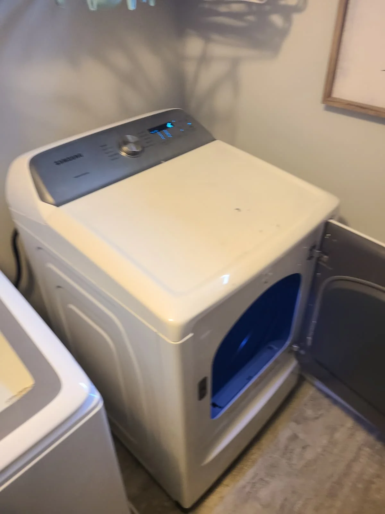
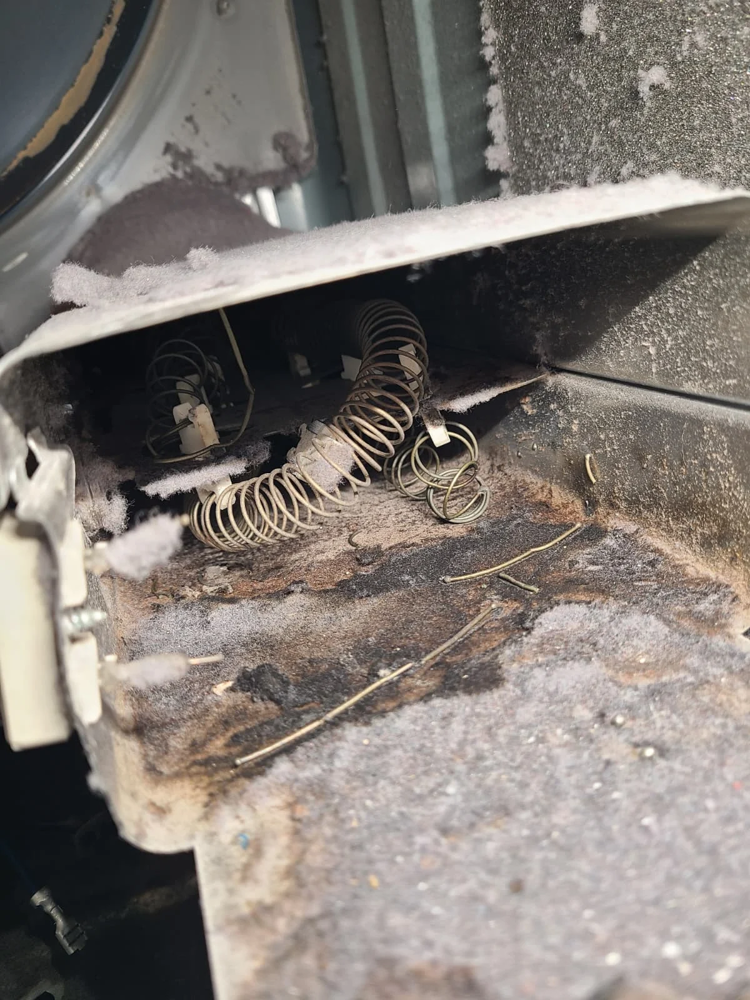
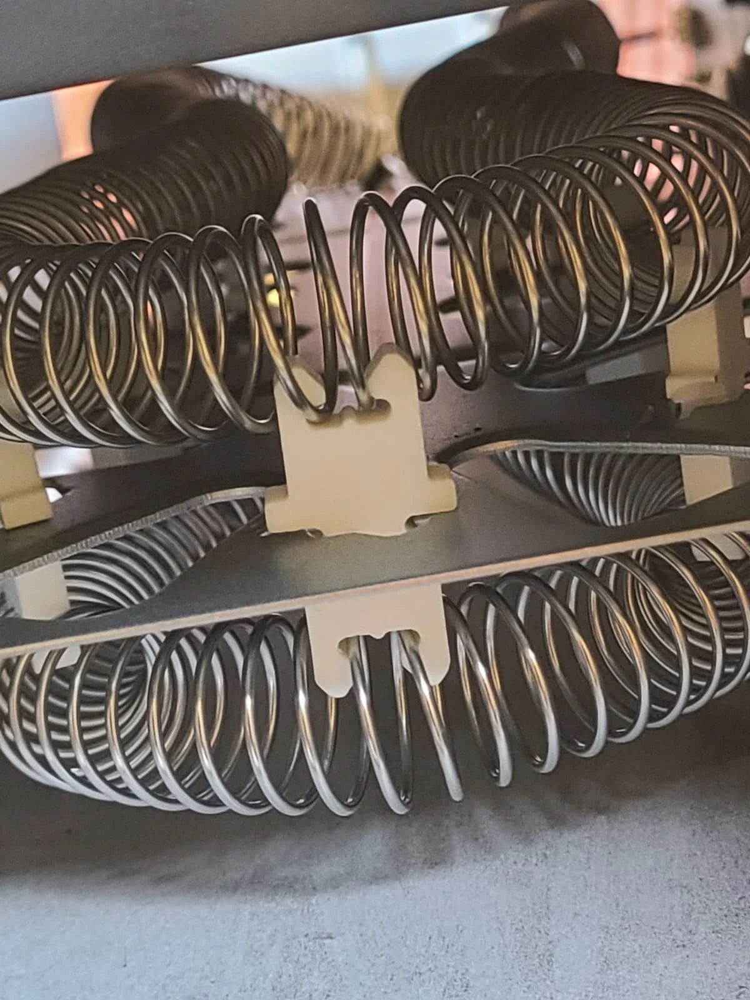
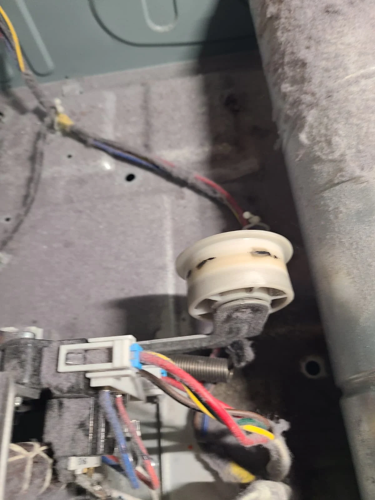
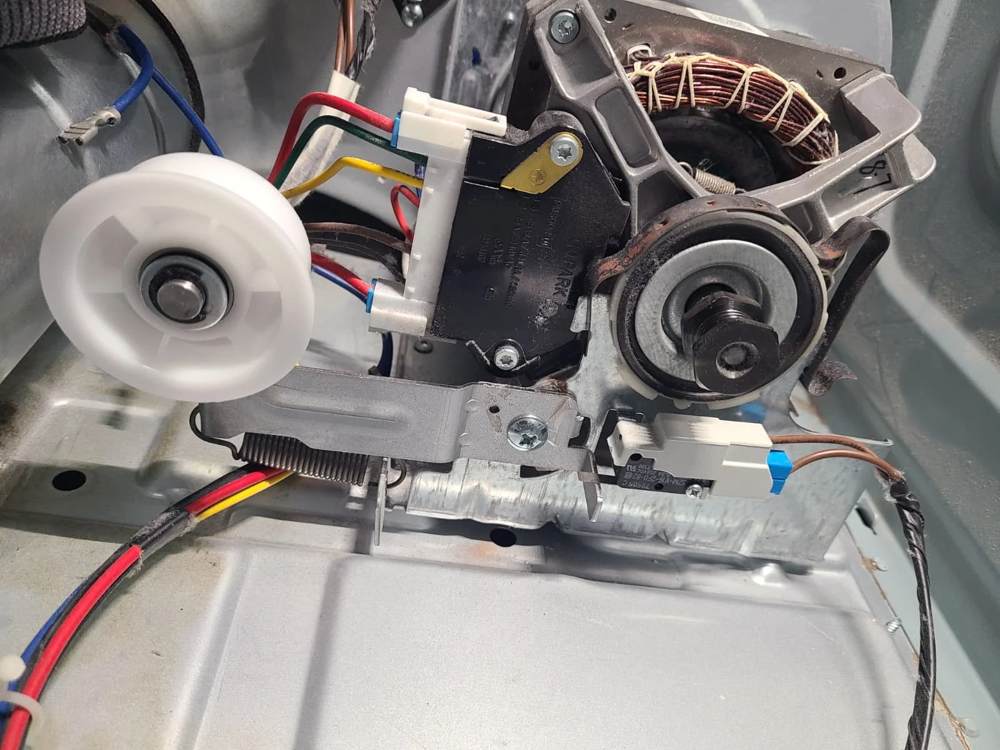
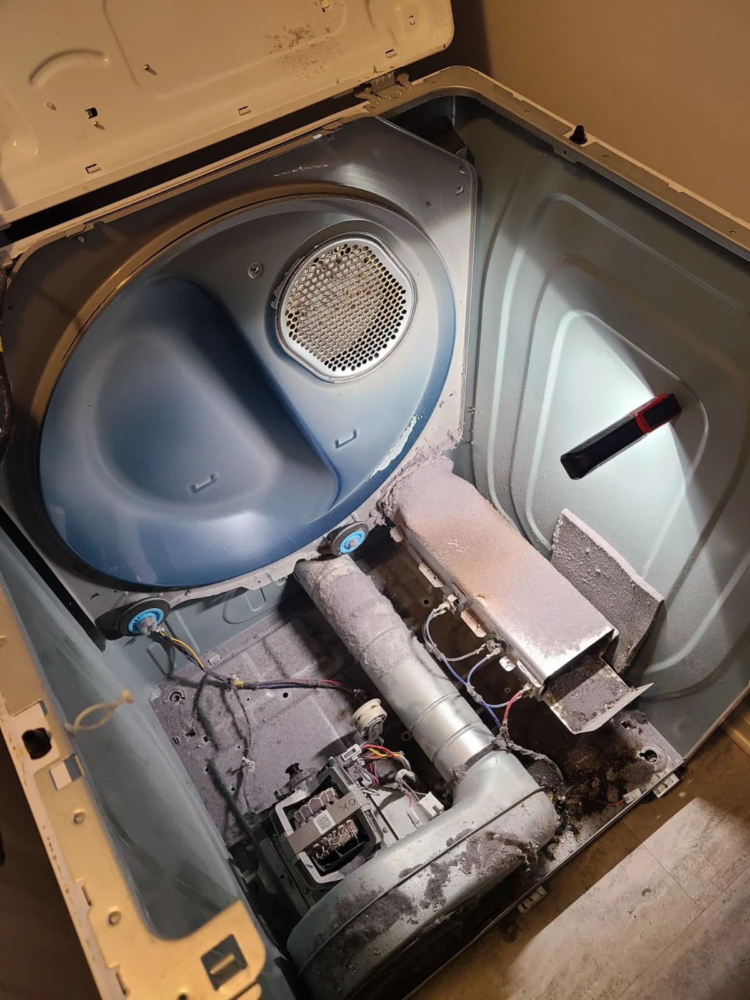
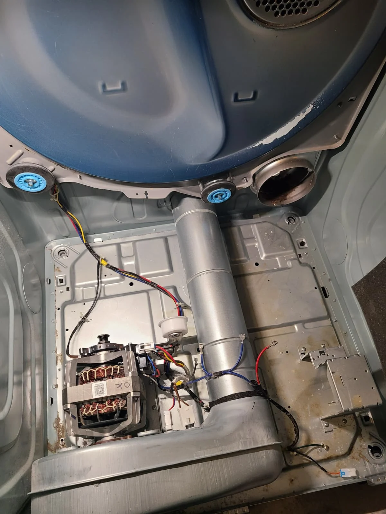

A No-Heat Complaint Led to Two Repair Findings
The service request from a homeowner in McCordsville, Indiana, was straightforward: their Samsung dryer was not heating. We inspected the appliance and opened the cabinet to diagnose the problem. Inside, the heating element had failed, and the belt idler pulley was also in poor condition.
The completed repair included a new heating element and a replacement idler pulley, along with vacuuming and cleaning the dryer interior. After reassembly, testing confirmed that the dryer heated and operated quietly without unusual sounds. This repair story, published November 2, 2026, documents those findings with photographs from the service visit.
Verified Model: Samsung DVE50R5200W/A3
The model label on the actual dryer identifies it as Samsung DVE50R5200W/A3. The close-up is a crop of that original photograph, preserving the printed model identification while leaving the serial number outside the image. It connects the repair account to the appliance that was serviced.
The two diagrams in the Visit Overview show the heating assembly and the belt-drive components. Use the arrows to switch between them. The service photographs below provide a different kind of detail: the condition of the failed heater, the worn tensioner and the lint found inside this particular dryer.
Burned-Out Heating Element Replaced
Diagnosis identified a burned-out heating element as the no-heat fault. The removed assembly contained broken coil sections, visible in the service photographs. We replaced the failed element so the dryer could produce heat again. The photographs show the damaged heater and a close view of the coils during the repair.


The heating element and the idler pulley serve different functions. The element supplies heat; the idler maintains tension on the drum drive belt. Replacing the heater addressed the diagnosed heating failure. The worn idler was a separate finding handled while the cabinet was open. The photos alone do not establish the original reason the element failed.

The Belt Idler Needed Replacement; the Drum Rollers Did Not
Inspection also found the idler pulley in poor condition. This is the belt tensioner pulley, located near the motor. It is distinct from the support rollers that carry the drum. The photograph shows the original idler before replacement, with lint present around the mechanism.
The drum support rollers were in good condition and were not replaced. Keeping that distinction clear matters: this visit did not include a drum roller replacement. The mechanical component changed was the belt idler pulley. The new idler was installed, and quiet operation was confirmed after the dryer had been reassembled.

Replacement Idler Pulley Installed
The replacement idler assembly was fitted beside the dryer motor, as shown in this service photograph. Its job is to maintain belt tension as the drum turns. The image records the installed component before the drum and cabinet were fully put back together.
The original complaint concerned missing heat, but the condition of the tensioner was another repair issue identified during the same diagnosis. Both findings were addressed in the completed work. Final testing then checked the assembled machine: it heated properly, ran quietly and produced no abnormal mechanical sounds. No replacement of the drum support rollers was needed.
Removing Heavy Lint From Inside the Dryer
Opening the dryer revealed substantial lint accumulation inside the cabinet and around the heating area. Some of the lint was scorched. We vacuumed and cleaned the accessible interior before completing reassembly. These photographs document the condition before cleaning and the interior after the accumulated material had been removed.


This was internal dryer cleaning performed as part of the repair. The service account does not include cleaning the household exhaust duct. It also does not establish that lint caused the element failure. The confirmed findings were a failed heater, a worn idler and accumulated lint, each addressed by the work described here.
Reassembled, Tested and Running Quietly
After replacing the heating element and belt idler pulley and cleaning the interior, we reassembled the dryer in reverse order and tested its operation. The dryer heated again and ran quietly without unusual sounds. That was the successful result of this Samsung dryer repair in McCordsville.
The finished result covered both parts of the repair: restored heat and smooth, quiet operation. The support rollers remained in place because they were in good condition. The completed service combined the two necessary component replacements with removal of the lint found inside the machine.
Questions About This Samsung Dryer Repair
Why was this Samsung dryer not heating?
The heating element had burned out. Diagnosis identified the failed element, and it was replaced.
Which pulley was replaced?
The belt idler pulley, also called the belt tensioner pulley, was replaced. It was found in poor condition during inspection.
Were the drum support rollers replaced?
No. The drum support rollers were in good condition. Only the idler pulley and heating element were replaced.
Was lint removed during the repair?
Yes. The dryer interior was vacuumed and cleaned. There was substantial lint buildup, including scorched lint.
How did the dryer perform afterward?
After reassembly and testing, it heated properly and ran quietly without abnormal sounds.
Does every Samsung no-heat problem require a heating element?
No. This was the confirmed diagnosis for this appliance. Another dryer needs its own diagnosis before replacement components are recommended.
Samsung Dryer Repair in McCordsville, Indiana
When arranging service for a dryer that is not heating, provide the model number and describe what happens when you start it. Mention any unusual sounds or smells as well. Those details help explain the complaint; inspection determines the repair needed.
Explore our dryer repair services in McCordsville, Samsung appliance repair services and recent repair stories.
Alex Appliance Repair is an independent appliance repair service operated by Aksenov LLC. Call (463) 248-8429 to discuss your dryer problem.
Book dryer repair in McCordsville